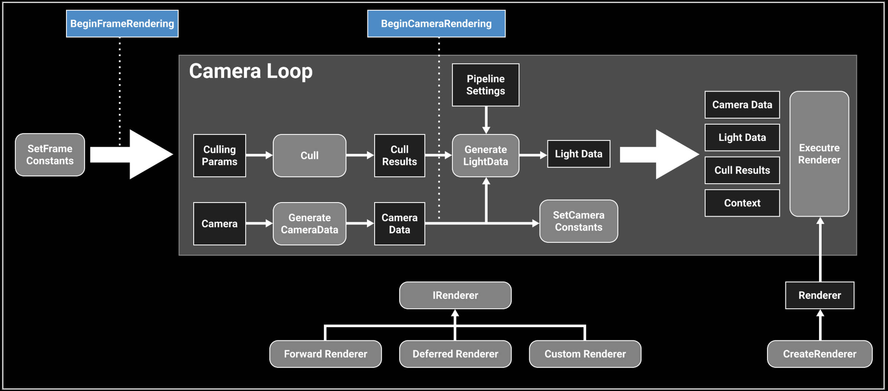
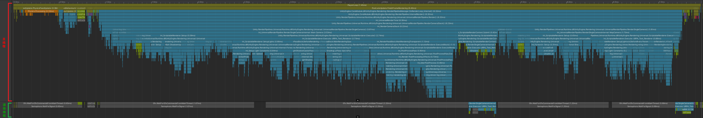

URP
Table of Contents
URP note.
<!– more –>
CoreRP
Base
RenderGraph
Render graph fundamentals
Main principles
在使用 RenderGraph API 写 render passes 之前，你需要知道下面一些基本原则：
- 你不再需要直接处理资源了，你需要使用 render graph 系统指定的 handles。所有 RenderGraph APIs 都使用这些 handles 来操作资源。render graph 管理的资源类型有 RTHandles, ComputeBuffers 以及 RendererLists
- 实际的资源引用只可以在一个 render pass 的执行代码（execution code）中被访问
- 该框架要求显示声明 render passes。每个 render pass 必须声明其从哪些资源进行读取，又会写入到哪些资源
- 每次执行 render graph，都不会进行持久化。这意味着在某次执行 render graph 中创建的资源无法传递到下一帧
- 对于哪些需要持久化的资源（例如，从一帧传递给另外一帧的资源），你可以在 render graph 外面创建该资源，然后将其导入到 render graph。在依赖跟踪方面，它们的行为与任何其他 render graph 资源一样，但该 render graph 不处理它们的生命周期。
- render graph 主要使用 RTHandles 作为纹理资源。这对如何编写着色器代码以及如何设置它们有很多影响。
Resource Management
render graph system 使用一帧的 high-level 表示来计算每个资源的生命周期。这意味着当你使用 RenderGraph API 创建一个资源时，render graph 系统此时并不会创建该资源。API 只是返回一个表示该资源的 handle(句柄)，你通过该 handle 来使用所有的 RenderGraph APIs。render graph 只会在第一个 pass 需要写入该资源前创建该资源。这样，创建和分配就可以分离开，创建并不意味着 render graph system 分配资源。相反，这意味着它提供了必要的内存来表示资源，以便它可以在渲染过程中使用该资源。 同理，它也会在最后一次需要读取该资源的 pass 之后释放该资源的内存。这样，render graph sytem 可以根据你在 pass 中声明的内容以最有效的方式重用内存。如果 render graph system 不执行需要指定资源的 pass，则系统不会为该资源分配内存。
Render graph execution overview
render graph 的执行是一个三步过程（设置，编译，执行），每一帧 render graph 都会从头开始。 这是因为 graph 可以在帧与帧之间动态变化，例如，graph 会根据用户的操作而变化。
- Setup
首先，设置所有的 render passes。在这里，你什么所有要执行的 render passes，以及每个 render pass 使用的资源。
- Compilation
其次，编译该 render graph。在该步骤中，render graph system 会剔除无用的 render pass(若 render pass 的输出没有被使用，则该 render pass 是无用的)。这样做可以减少 Setup 的处理工作(在设置 render graph 时不需要处理特殊逻辑了)。debug render passes 就是一个很好的离子。如果你声明了一个 render pass 来生成一些调试话输出，你不需要将其展现到 back buffer，render graph system 会自动剔除该 render pass。
此步骤还会计算资源的生命周期。 这允许 render graph system 以高效的方式创建和释放资源，并可以正确计算同步点，以同步在 async compute pipeline 上执行 passes。
- Execution
最后，执行 render graph。render graph system 按照什么的顺序执行所有未被剔除的 render passes。在每个 render pass 之前，render graph system 会创建合适的资源，并在 render pass 之后释放这些资源(若这些资源不在被后续的 render passes 使用)
RTHandle system
Rendering Debugger
实现 Rendering Debugger 的 Editor 代码在 Packages\com.unity.render-pipelines.core\Editor\Debugging\DebugWindow.cs。可以将自己的扩展嵌入到其中。可以参考 URP 中 DebugDisplaySettingsRendering 的实现。
URP
Base
源码分析
下图为 URP 处理流程：

URP 12.1.6 版本中 ForwardRenderer 变为了 UniversalRenderer
- Unity URP 简要剖析 https://zhuanlan.zhihu.com/p/399297398
源码分析方法
method 1: use urp
查看官方文档，了解 urp 相关的概念，功能。使用 urp 提供的功能。从整体来了解 urp。
method 2: static analysis and editor debugging method
将 com.unity.render-pipelines.core@14.0.7 和 com.unity.render-pipelines.universal@14.0.7 从 Test/Library/PackageCache 目录 copy 到 Test/Packages 目录，方便对 urp 源码进行修改来辅助调试。
在 editor 下对源代码进行调试，结合对 urp 源代码静态分析，来分析 URP 的执行逻辑。
可以使用 Understand 工具来辅助 urp 源代码的静态分析。 Understand 静态代码分析
method 3: app profiling method
首先，编译 Windows 版本进行分析，BuildSettings 设置如下：
Development Build = True
Deep Profiling Support = True
Script Debugging = True
其次，使用 Unity Profiler 工具对 Test.exe 进行 Profiler
在 Timeline 中可以看到一帧中，主线程和渲染线程函数的调用顺序，如下图：

RenderingPath
Forward Rendering Path
前向渲染伪代码如下，可以看出 N 个物体 M 个光源的情况下，运行复杂度为 O(N*M)。光源数量对于计算复杂度影响很大，比较适合光源数量比较少的情况。
For each light:
For each object affected by the light:
framebuffer += object * light
Deferred Rendering Path
For each object:
Render to multiple targets
For each light:
Apply light as a 2D postProcess
- 优点
- 解耦了 Mesh Draw 和 Light Draw，保证物体只被绘制一次，光源也只绘制一次，整体场景 Draw call 复杂度变成了 O(M+N)
- G-Buffer 除了用于直接光照外，还能够被用于一些间接光照的效果，也正是 G-Buffer 概念的提出，使得近十年来越来越多的算法从 World space 向 Screen Space 的演进
- 使得每个着色器都专注于几何参数提取或者照明。这种分离使着色器的功能进行拆分，简化了着色器系统管理。使得 Shader 支持功能更加单一(这是优点也是缺点)
- 只渲染可见的像素，节省计算量
- 解耦了 Mesh Draw 和 Light Draw，保证物体只被绘制一次，光源也只绘制一次，整体场景 Draw call 复杂度变成了 O(M+N)
- 缺点
- 内存开销较大，G-Buffer 是主要元凶
- 需要 MRT 的支持(OpenGL|ES3.0)
- 读写 G-buffer 的内存带宽用量是性能瓶颈。每个光源计算都会去读取 GBuffer
- 对透明物体的渲染存在问题。大多数是在 Deferred 渲染完之后，让透明物体走 Forward 渲染
- 对多重采样抗锯齿(MultiSampling Anti-Aliasing, MSAA)的支持不友好
- 内存开销较大，G-Buffer 是主要元凶
Forward Plus Rendering Path
foreach object in sceen
get depth
foreach tile in screen:
get max min depth
Frustum Intersection test
Generate a list of light
foreach pixel in screen:
foreach light in light_list_of_this_tile:
pixelLighting += light_contribution_to_pixel(light,pixel)
参考资料
- Tile Base Render (Forward+) https://zhuanlan.zhihu.com/p/553907076
- URP12 ClusterRendering 调研 https://zhuanlan.zhihu.com/p/489839605
- Deferred Shading ./UnityCatLikeCoding.html#org535124d
- Deferred Lights ./UnityCatLikeCoding.html#org318248f
Forward Plus
- 所有灯光根据离相机的距离按照从前向后排序
- 将屏幕划分成多个 Tile，计算出每个 Tile 内包含的灯光，使用 Mask 来保存（例如第 3 位为 1 表示第三个灯和 Tile 相交，三这个序号由第一步的排序决定）。一个 Mask 使用一个 uint 表示，如果灯光超出 32 个，则会再多使用对应个数的 uint
- 将相机根据近远裁平面从前往后切分成多个 Bin，每个 Bin 保存和其相交的最近和最远的灯光的序号（也就是会存下来两个值，minIndex 和 maxIndex，分别映射到由第一步得到的排序序号）
- 将第二第三步得到的数据存储到 Constant Buffer 中待之后 GPU 读取
- 光照着色时，会根据当前顶点所在的 Tile 来先读出对应的 Mask。其次根据当前顶点所在 Bin，使用 Bin 的 minIndex 和 maxIndex 对刚刚读取到的 Mask 做一次过滤来得到最终受影响的灯光（例如 Mask 为 10011001，为了简化这里只用了 8 位。而 minIndex 为 4，maxIndex 为 6，这两个值代表的范围为 00111000。将这个范围与 Mask 做一次与运算后得到 00011000，便为最终影响这个顶点的那些灯光，即第 4 和第 5 个灯）。在获取到具体哪个灯后便可以执行正常的光照计算了
Native RenderPass
URPAsset
Runtime 修改 URPAsset 设置
using System.Collections; using System.Collections.Generic; using System.Reflection; using UnityEngine; using UnityEngine.Rendering.Universal; public static class UniversalRenderPipelineAssetExtensions { public static T GetRenderFeature<T>(this UniversalRenderPipelineAsset asset, string name) where T : ScriptableRendererFeature { var type = asset.GetType(); var propertyInfo = type.GetField("m_RendererDataList", BindingFlags.Instance | BindingFlags.NonPublic); if (propertyInfo == null) { return null; } var scriptableRenderData = (ScriptableRendererData[])propertyInfo.GetValue(asset); if (scriptableRenderData != null && scriptableRenderData.Length > 0) { foreach (var renderData in scriptableRenderData) { foreach (var rendererFeature in renderData.rendererFeatures) { if (rendererFeature is T && rendererFeature.name == name) { return rendererFeature as T; } } } } return null; } public static T SetRenderFeatureEnable<T>(this UniversalRenderPipelineAsset asset, string name, bool enable) where T : ScriptableRendererFeature { var feature = GetRenderFeature<T>(asset, name); if (feature) feature.SetActive(enable); return feature; } }
void EnableFeature(FeatureTag featureTag, bool isEnable) { var asset = GraphicsSettings.currentRenderPipeline as UniversalRenderPipelineAsset; switch(featureTag) { case FeatureTag.kColorRT: asset.supportsCameraOpaqueTexture = isEnable; break; case FeatureTag.kDepthRT: asset.supportsCameraDepthTexture = isEnable; break; case FeatureTag.kUpdateDepthRT: asset.SetRenderFeatureEnable<CopyDepth>("UpdateDepth", isEnable); break; case FeatureTag.kPlaneReflectionRT: //TODO break; } }
RenderFeature
Disable/Enable RenderFeature Runtime
screenShotRendererFeature.SetActive(enableSSRF);
Custom RenderFeature
template
using UnityEngine; using UnityEngine.Rendering; // old version namespace //using UnityEngine.Rendering.LWRP; using UnityEngine.Rendering.Universal; public class CustomRenderPassFeature : ScriptableRendererFeature { class CustomRenderPass : ScriptableRenderPass { public Mesh Mesh; public Material Material; // This method is called by the renderer before rendering a camera // Override this method if you need to to configure render targets and their clear state, and to create temporary render target textures. // If a render pass doesn't override this method, this render pass renders to the active Camera's render target. // You should never call CommandBuffer.SetRenderTarget. Instead call <c>ConfigureTarget</c> and <c>ConfigureClear</c>. public override void OnCameraSetup(CommandBuffer cmd, ref RenderingData renderingData) { } // This method is called before executing the render pass. // It can be used to configure render targets and their clear state. Also to create temporary render target textures. // When empty this render pass will render to the active camera render target. // You should never call CommandBuffer.SetRenderTarget. Instead call <c>ConfigureTarget</c> and <c>ConfigureClear</c>. // The render pipeline will ensure target setup and clearing happens in an performance manner. public override void Configure(CommandBuffer cmd, RenderTextureDescriptor cameraTextureDescriptor) { } // Here you can implement the rendering logic. // Use <c>ScriptableRenderContext</c> to issue drawing commands or execute command buffers // https://docs.unity3d.com/ScriptReference/Rendering.ScriptableRenderContext.html // You don't have to call ScriptableRenderContext.submit, the render pipeline will call it at specific points in the pipeline. public override void Execute(ScriptableRenderContext context, ref RenderingData renderingData) { CommandBuffer cmd = CommandBufferPool.Get(); cmd.DrawMeshInstanced(Mesh, 0, Material, 0, new[] { Matrix4x4.TRS(Vector3.zero, Quaternion.identity, Vector3.one) }); context.ExecuteCommandBuffer(cmd); CommandBufferPool.Release(cmd); } /// Cleanup any allocated resources that were created during the execution of this render pass. public override void FrameCleanup(CommandBuffer cmd) { } } CustomRenderPass m_ScriptablePass; public override void Create() { Debug.Log("Create"); m_ScriptablePass = new CustomRenderPass(); m_ScriptablePass.Mesh = Resources.Load<Mesh>("Cube123"); m_ScriptablePass.Material = Resources.Load<Material>("TestMaterial123"); // Configures where the render pass should be injected. m_ScriptablePass.renderPassEvent = RenderPassEvent.BeforeRenderingOpaques; } // Here you can inject one or multiple render passes in the renderer. // This method is called when setting up the renderer once per-camera. public override void AddRenderPasses(ScriptableRenderer renderer, ref RenderingData renderingData) { renderer.EnqueuePass(m_ScriptablePass); } }
kawase blur
using System.Collections.Generic; using UnityEngine; using UnityEngine.Rendering; using UnityEngine.Rendering.Universal; public class KawaseBlur : ScriptableRendererFeature { [System.Serializable] public class KawaseBlurSettings { public RenderPassEvent renderPassEvent = RenderPassEvent.AfterRenderingTransparents; public Material blurMaterial = null; [Range(2,15)] public int blurPasses = 1; [Range(1,4)] public int downsample = 1; public bool copyToFramebuffer; public string targetName = "_blurTexture"; } public KawaseBlurSettings settings = new KawaseBlurSettings(); class CustomRenderPass : ScriptableRenderPass { public Material blurMaterial; public int passes; public int downsample; public bool copyToFramebuffer; public string targetName; string profilerTag; int tmpId1; int tmpId2; RenderTargetIdentifier tmpRT1; RenderTargetIdentifier tmpRT2; private RenderTargetIdentifier source { get; set; } public void Setup(RenderTargetIdentifier source) { this.source = source; } public CustomRenderPass(string profilerTag) { this.profilerTag = profilerTag; } public override void Configure(CommandBuffer cmd, RenderTextureDescriptor cameraTextureDescriptor) { var width = cameraTextureDescriptor.width / downsample; var height = cameraTextureDescriptor.height / downsample; tmpId1 = Shader.PropertyToID("tmpBlurRT1"); tmpId2 = Shader.PropertyToID("tmpBlurRT2"); cmd.GetTemporaryRT(tmpId1, width, height, 0, FilterMode.Bilinear, RenderTextureFormat.ARGB32); cmd.GetTemporaryRT(tmpId2, width, height, 0, FilterMode.Bilinear, RenderTextureFormat.ARGB32); tmpRT1 = new RenderTargetIdentifier(tmpId1); tmpRT2 = new RenderTargetIdentifier(tmpId2); ConfigureTarget(tmpRT1); ConfigureTarget(tmpRT2); } public override void Execute(ScriptableRenderContext context, ref RenderingData renderingData) { CommandBuffer cmd = CommandBufferPool.Get(profilerTag); RenderTextureDescriptor opaqueDesc = renderingData.cameraData.cameraTargetDescriptor; opaqueDesc.depthBufferBits = 0; // first pass // cmd.GetTemporaryRT(tmpId1, opaqueDesc, FilterMode.Bilinear); cmd.SetGlobalFloat("_offset", 1.5f); cmd.Blit(source, tmpRT1, blurMaterial); for (var i=1; i<passes-1; i++) { cmd.SetGlobalFloat("_offset", 0.5f + i); cmd.Blit(tmpRT1, tmpRT2, blurMaterial); // pingpong var rttmp = tmpRT1; tmpRT1 = tmpRT2; tmpRT2 = rttmp; } // final pass cmd.SetGlobalFloat("_offset", 0.5f + passes - 1f); if (copyToFramebuffer) { cmd.Blit(tmpRT1, source, blurMaterial); } else { cmd.Blit(tmpRT1, tmpRT2, blurMaterial); cmd.SetGlobalTexture(targetName, tmpRT2); } context.ExecuteCommandBuffer(cmd); cmd.Clear(); CommandBufferPool.Release(cmd); } public override void FrameCleanup(CommandBuffer cmd) { } } CustomRenderPass scriptablePass; public override void Create() { scriptablePass = new CustomRenderPass("KawaseBlur"); scriptablePass.blurMaterial = settings.blurMaterial; scriptablePass.passes = settings.blurPasses; scriptablePass.downsample = settings.downsample; scriptablePass.copyToFramebuffer = settings.copyToFramebuffer; scriptablePass.targetName = settings.targetName; scriptablePass.renderPassEvent = settings.renderPassEvent; } public override void AddRenderPasses(ScriptableRenderer renderer, ref RenderingData renderingData) { var src = renderer.cameraColorTarget; scriptablePass.Setup(src); renderer.EnqueuePass(scriptablePass); } }
Shader
MultiPass
方案 1： shader 中多个 Pass。会打断 SRP Batch。
方案 2： 为同一个物体使用多个材质
Lightmap 烘培
Misc
Upgrade Buildin Shader To URP
Point Light Effect Error
Common
URP 提供了下面工具，实现自动将 Buildin Shader 升级为 URP。
Edit/Render Pipeline/Universal Render Pipeline/Upgrade Selected Materials to UniversalRP Materials
工具实现在下面文件：
com.unity.render-pipelines.universal@10.5.0\Editor\UniversalRenderPipelineMaterialUpgrader.cs
Unity Buildin 和 URP 支持的 Feature 对比
创建一个 Lit Shader Graph 默认文件，生成的 shader 代码
下面文件是对 Lit Shader Graph 默认文件简化后的 shader 代码。
./URP/urp_lit_shader_graph.shader
shader 的 vert frag 入口函数被定义在 com.unity.render-pipelines.universal/Editor/ShaderGraph/Includes/PBRForwardPass.hlsl 文件中。
PackedVaryings vert(Attributes input) { Varyings output = (Varyings)0; output = BuildVaryings(input); PackedVaryings packedOutput = (PackedVaryings)0; packedOutput = PackVaryings(output); return packedOutput; } half4 frag(PackedVaryings packedInput) : SV_TARGET { Varyings unpacked = UnpackVaryings(packedInput); UNITY_SETUP_INSTANCE_ID(unpacked); UNITY_SETUP_STEREO_EYE_INDEX_POST_VERTEX(unpacked); SurfaceDescriptionInputs surfaceDescriptionInputs = BuildSurfaceDescriptionInputs(unpacked); SurfaceDescription surfaceDescription = SurfaceDescriptionFunction(surfaceDescriptionInputs); #if _ALPHATEST_ON half alpha = surfaceDescription.Alpha; clip(alpha - surfaceDescription.AlphaClipThreshold); #elif _SURFACE_TYPE_TRANSPARENT half alpha = surfaceDescription.Alpha; #els half alpha = 1; #endif InputData inputData; InitializeInputData(unpacked, surfaceDescription, inputData); // TODO: Mip debug modes would require this, open question how to do this on ShaderGraph. //SETUP_DEBUG_TEXTURE_DATA(inputData, unpacked.texCoord1.xy, _MainTex); #ifdef _SPECULAR_SETUP float3 specular = surfaceDescription.Specular; float metallic = 1; #else float3 specular = 0; float metallic = surfaceDescription.Metallic; #endif half3 normalTS = half3(0, 0, 0); #if defined(_NORMALMAP) && defined(_NORMAL_DROPOFF_TS) normalTS = surfaceDescription.NormalTS; #endif SurfaceData surface; surface.albedo = surfaceDescription.BaseColor; surface.metallic = saturate(metallic); surface.specular = specular; surface.smoothness = saturate(surfaceDescription.Smoothness), surface.occlusion = surfaceDescription.Occlusion, surface.emission = surfaceDescription.Emission, surface.alpha = saturate(alpha); surface.normalTS = normalTS; surface.clearCoatMask = 0; surface.clearCoatSmoothness = 1; #ifdef _CLEARCOA surface.clearCoatMask = saturate(surfaceDescription.CoatMask); surface.clearCoatSmoothness = saturate(surfaceDescription.CoatSmoothness); #endif #ifdef _DBUFFER ApplyDecalToSurfaceData(unpacked.positionCS, surface, inputData); #endif half4 color = UniversalFragmentPBR(inputData, surface); color.rgb = MixFog(color.rgb, inputData.fogCoord); return color; }
生成的 shader 代码
URP Buildin GI 比较
下图为图 1

下图为图 2

下图为图 3

下图为图 4

下图为图 5

图 1 中，Buildin 下 BakedGI 和 RealtimeGI 差别为什么很大？
关闭 Mesh 的 LightProbe Blend，后差别几乎没有，说明 BakedGI 和 RealtimeGI 烘培所得的 LightProbe 不同，直接通过 FrameDebug 可以看到球谐系数不同。
LightProbe 数据来自 AmbientColor，场景中方向光，场景中物体反射的光。前两个数据是相同的，所以只能是最后一个数据不同，而图 3 中，Buildin 下 BakedGI 和 RealtimeGI 差别不大，说明 Surface Shader 和 Standard Shader 烘培出来的结果不同。
使用默认的 Surface Shader 进行测试，如图 5，发现 Buildin 下 BakedGI 和 RealtimeGI 差别不大。说明自定义的 Surface Shader 和默认的 Surface Shader 烘培出来的结果不同。
检查自定义的 Surface Shader，发现其中会使用 viewDir，猜测在离线烘焙时，viewDir 的值为（0，0，0），所以导致 Custom Surface Shader MetaPass 返回的 albedo 是错误的。
HDRP
Base
Setup
- 安装 HDRP package
- 打开 HDRP 设置向导 Window/Rendering/HDRP Wizard, 如果有设置错误，直接点击 FixAll
源码分析
下图为 HDRP 处理流程：

ERROR
Material 'Liquid' with Shader 'Custom/MyEffect/Unlit/Liquid' doesn't have a texture property '_MainTex' UnityEngine.GUIUtility:ProcessEvent (int,intptr,bool&)
URP 中使用_BaseMap 代替了_MainTex。并在_BaseMap 的前面标记了[MainTexture]。Editor 中有代码依赖_MainTex 命名，所以导致了该错误。
在 Shader 'Custom/MyEffect/Unlit/Liquid' 的 Property 部分添加如下代码就可以解决该问题
// ObsoleteProperties //[HideInInspector] _MainTex("BaseMap", 2D) = "white" {} //[HideInInspector] _Color("Base Color", Color) = (1, 1, 1, 1)
参考资料
- CoreRP Library API https://docs.unity3d.com/Packages/com.unity.render-pipelines.core@14.0/api/
- CoreRP Library Manual https://docs.unity3d.com/Packages/com.unity.render-pipelines.core@14.0/manual/
- Universal RP API https://docs.unity3d.com/Packages/com.unity.render-pipelines.universal@14.0/api/
- Universal RP Manual https://docs.unity3d.com/Packages/com.unity.render-pipelines.universal@14.0/manual/
- Graphics Github https://github.com/Unity-Technologies/Graphics